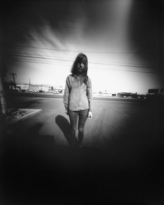

Cámara estenopeica
Una cámara estenopeica (del griego στένω/steno estrecho, ὀπή/ope abertura, agujero) es una cámara fotográfica sin lente, que consiste en:
A.- una caja estanca a la luz
B.- con sólo un pequeño orificio por donde entra la luz, el estenopo.
C.- un material fotosensible.
Para producir una imagen nítida es necesario que esta apertura sea muy pequeña, del orden de 0,5 mm (1/50 pulgadas). El obturador de la cámara normalmente consiste en un material que no permite el paso de luz con el que manualmente se tapa el orificio. Debido al tamaño de la apertura, el tiempo de exposición normalmente es mucho mayor al necesario con cámaras convencionales: puede ir desde 5 segundos hasta más de una hora.
La imagen puede ser proyectada sobre una pantalla translúcida para poder verse simultáneamente (común para eclipses solares), o sobre una película, o sobre un sensor digital CCD.
Invención de la cámara oscura
Hay constancia de que desde 500 a. C. hay referencias a la cámara oscura. Aristóteles y Euclides ya escribieron acerca de cámaras oscuras que ocurrían de manera natural, como la luz que pasa a través de una cesta tejida o entretejidos de hojas. Sin embargo, los antiguos griegos creían que el ser humano podía ver gracias a los rayos que emitían sus ojos.
Lo que permitió entender mucho mejor a la cámara oscura fue descubrir que la luz entraba al ojo en vez de salir de él. Ibn al-Haytham (matemático, astrónomo y físico iraquí del siglo X) describió esta idea en su Libro de óptica (de siete volúmenes; también llamado Kitab al-Manazir y, en latín, De Aspectibus or Opticae Thesaurus: Alhazeni Arabis). También inventó la primera cámara oscura después de notar cómo salía la luz de un agujero en las persianas. La mejoró tras notar que, cuanto más pequeño el agujero, más nítida era la imagen.
Selección del tamaño de la abertura
En general, cuanto más pequeño sea el agujero la imagen tendrá una mejor resolución, ya que el círculo de confusión proyectado será más grande. Sin embargo, si es extremadamente pequeño se puede producir mucha difracción afectando a la nitidez de la imagen. Además, cuando el diámetro de la apertura se aproxima al grosor del material se produce un viñetado cerca de los bordes de la imagen porque menos luz logra llegar a estas áreas. Esto se debe a la sombra producida por la luz que entra a un ángulo diferente a 90 grados.
Es recomendable que la apertura sea circular (reduce la refracción) y de un material lo más delgado posible. Aunque existe la posibilidad de que este agujero sea realizado mediante un láser, un aficionado puede lograr agujeros con suficiente calidad como para trabajos fotográficos.
una vez tomada la foto, es importante no exponer el papel fotosensible a la luz, se lo debe llevar a un cuarto oscuro.
Un método muy utilizado es lijar una hoja delgada de latón o de aluminio (puede utilizarse la de las latas de bebidas) para reducir el grosor al máximo y después crear el agujero con una aguja, al final es necesario girar un poco la aguja y limar los bordes para que el agujero quede lo más uniforme posible.
Construccion
Las cámaras estenopeicas normalmente son hechas a mano por los fotógrafos. En su forma más simple consiste en una caja que no permita la entrada de luz con un agujero en una de sus paredes y la película fotográfica o el papel fotográfico en la pared contraria. Como obturador se usa una lámina de un material opaco. El agujero se puede hacer con una aguja en una hoja delgada de aluminio o latón. Esta pieza se pega a un hoyo un poco mayor que está cortado en una pared de la caja.
En algunas cámaras estenopeicas es posible deslizar el plano del material fotosensible. Esto permite cambiar el ángulo de visión de la cámara y la relación de pasos del diafragma (número-f). Al acercar el plano al agujero se lográ un mayor ángulo y un menor tiempo de exposición, si se aleja el ángulo será pequeño y el tiempo de exposición mayor.
También es posible hacer cámaras estenopeicas cambiando el objetivo de una cámara normal por una lámina con una pequeña apertura. Las cámaras de 35 mm pueden ser especialmente útiles, aún si han sido dañadas, siempre y cuando el obturador aún funcione. No obstante el gran incremento en la relación del diafragma hará que sea necesario disparar con luz intensa y película rápida para mantener tiempos de exposición relativamente cortos.